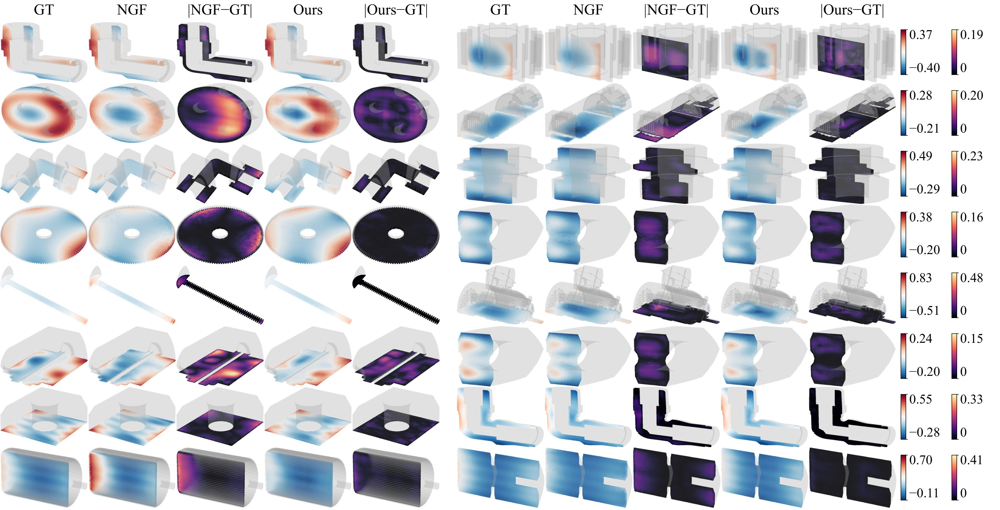
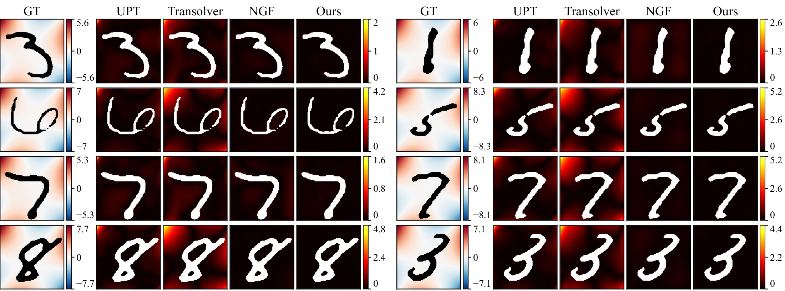

Neural Harmonic Measure Operator
Abstract
We introduce Neural Harmonic Measure Operator (NHMO), a neural solver for elliptic PDE problems on variable-shape domains. The harmonic measure of a domain is the boundary probability distribution that, integrated against any boundary data, returns the Dirichlet Laplace solution. It depends only on the geometry, not on the boundary data. NHMO parameterizes the density of this measure as a transformer-based boundary kernel supervised by Walk-on-Spheres exit samples, so one trained kernel handles different boundary values on a shape with no retraining. We extend it to Poisson via a classical decomposition, with an auxiliary network amortizing the source-induced correction and avoiding the singular volume quadrature that breaks direct evaluation. At inference, new boundary values and new sources both yield PDE solutions by re-integration against the fitted kernel and lift, with no retraining. NHMO improves over four prior baselines on the MCB-B 3D variable-shape Poisson benchmark across all five categories, and is competitive with major neural-operator baselines on a controlled 2D testbed.
Method
For a Poisson problem $\Delta u = f$ in $\Omega$ with $u = h$ on $\partial\Omega$, the classical balayage split writes the solution as a boundary integral of $h$ against the harmonic measure $\omega_p$ plus a source-only term that vanishes on the boundary. NHMO learns both pieces:
$$u(p) \;=\; \big\langle h,\, K_\theta(p,\cdot\,;\Omega) \big\rangle_{\partial\Omega} \;+\; v_\varphi(p;\Omega,h,f).$$The kernel $K_\theta$ approximates the density $d\omega_p/d\sigma$ and depends on the geometry alone. It is trained from Walk-on-Spheres exit points, without solution data. Once it is evaluated for a shape, every new boundary condition is a quadrature against the same kernel matrix, and the lift $v_\varphi$ adds the source contribution.
Results
| Method | Nut | Gear | Motor | Fitting | Screws & Bolts |
|---|---|---|---|---|---|
| Transolver | 0.320 | 0.281 | 0.407 | 0.180 | 0.221 |
| LNO | 0.372 | 0.466 | 0.528 | 0.259 | 0.239 |
| UPT | 0.516 | 0.507 | 0.765 | 0.392 | 0.358 |
| NGF | 0.275 | 0.243 | 0.338 | 0.160 | 0.189 |
| NHMO (ours) | 0.216 | 0.188 | 0.284 | 0.147 | 0.131 |


BibTeX
@inproceedings{
he2026nhmo,
title={Neural Harmonic Measure Operator},
author={Jinjin He and Sinan Wang and Yuchen Sun and Bo Zhu},
booktitle={Advances in Neural Information Processing Systems},
year={2026},
url={https://openreview.net/forum?id=csUQ0IwX0R}
}